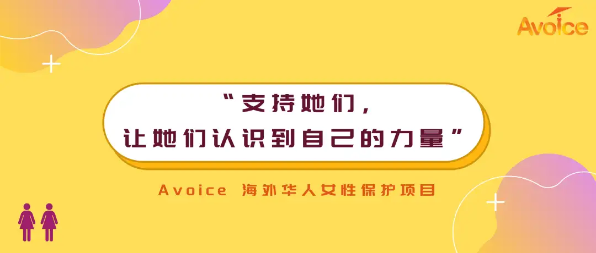
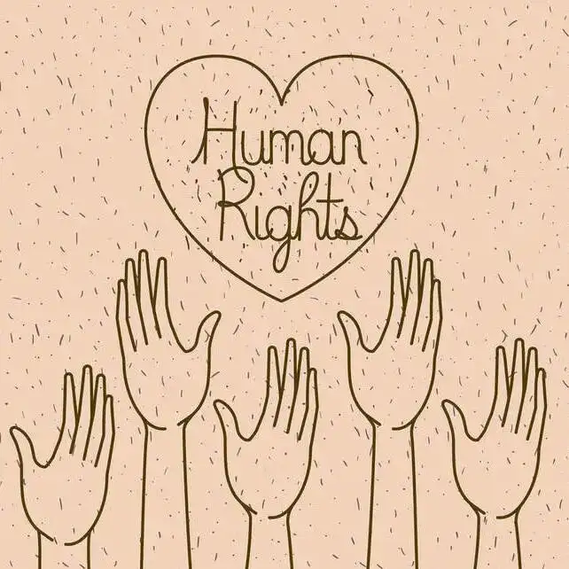
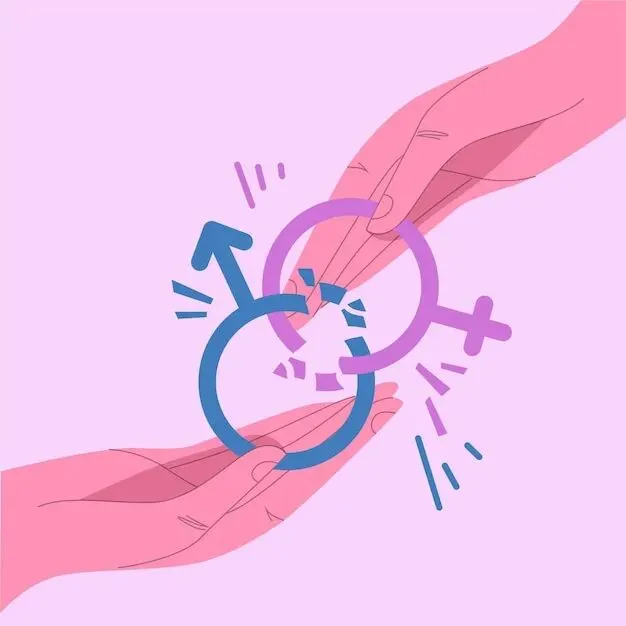
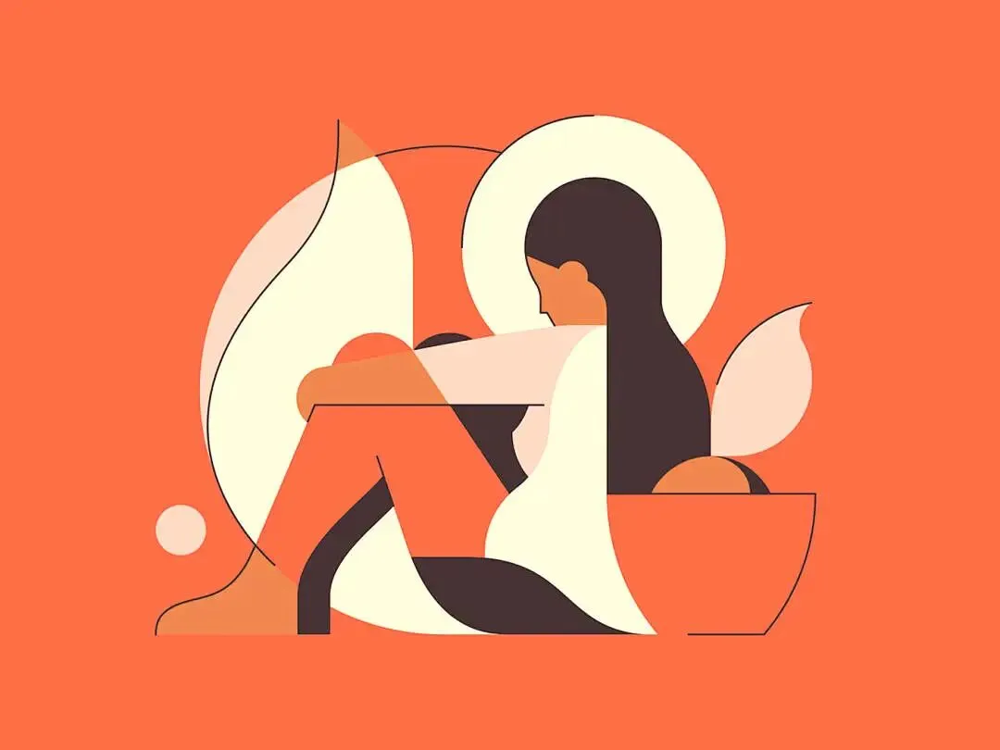
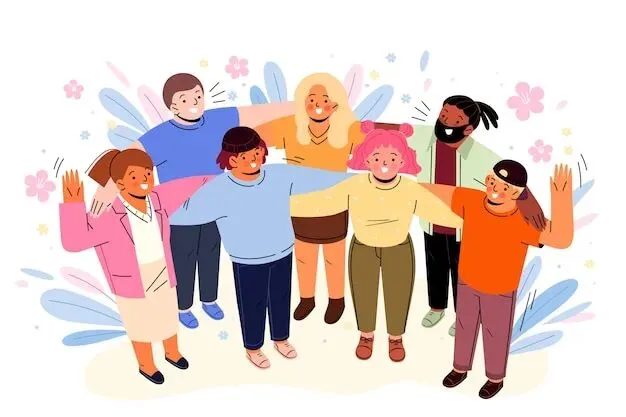

莱莎·比尔德摩尔（Leisha Beardmore）是一位在性别平等和女性权益领域备受尊重的倡导者，在与国际特赦组织、救助儿童会和国际救援委员会等组织合作的15年间，TA专注于性别暴力的预防和应对、儿童的保护以及妇女的心理健康和社会支持领域，深刻认识到性别平等和女性权益对于一个公正、平等的社会的重要性。以下为Avoice海外华人女性保护项目同莱莎·比尔德摩尔的对话。
特别提示：
莱莎·比尔德摩尔的性别代词是she/they，因此，在下文中用TA来指代莱莎。我们尊重每个人的性别身份，在交流和表达中，非常乐意使用对方认可的性别代词，避免任何可能的误解或冒犯。
“为保护弱势人群的权利而奋斗”
莱莎称自己很小就对人权问题感兴趣，并一直想从事这类工作，TA深信，紧急情况下的保护、基于性别暴力的应对、妇女儿童保护等领域是保障人权的具体表现。“理解不同个体的需求，剖析个体的权利如何被侵犯，并从权利保护的视角去寻求解决办法，从而给人们提供支持，这才是真正有意义的事情，就像我们一直在做的事情一样。”
兴趣驱动下，莱莎参与了多个组织的工作。在国际特赦组织期间，TA负责宣传和调研工作，推广人权理念，并致力于揭露、反对侵犯人权的行为，为遭遇迫害的人们争取公平和正义。在国际救援委员会期间，TA了解到不同群体的需求不同，需要根据实际情况量身定制服务方案，于是TA与当地居民和社区开展合作，倾听他们的声音和经验，共同设计和实施更加切实可行的方案，以满足服务对象的需求。

尽管在两个组织的工作职责略有不同，但莱莎始终抱着同样的信念，为保护弱势人群的权利而奋斗。TA坚信，要促使政策做出改变，就要倾听当地人民的意见并汲取他们的经验，此外，在解决脆弱性、互斥性以及和虐待相关的问题时，要有意识地关注人权和文化因素。 这些理念推动着TA投身于人权工作，帮助TA在不同领域中取得了丰硕成果。
美国少数族裔女性面临的严峻环境
丰富的人权保护工作经历让莱莎对性别暴力、美国少数族裔妇女所面临困境有着深刻的洞察，TA为性别的平等和女性权益的讨论带来了独特的视角。
莱莎认为，性别平等和女性权益链接着更广泛的社会问题，如社会和经济的不平等、政治权力结构的不平等，需要将性别平等和女性权益的讨论延展到更深的层次，才有可能实现真正的社会变革和社会公正。“无论是身体暴力、性暴力，还是各种资源的可及性，背后都潜藏着权力问题。”譬如根深蒂固的性别暴力问题，莱莎认为了解性别暴力的压迫性质非常重要，只有这样，我们才能真正理解其作为男权主义维持自身权力工具的本质。

目前，美国性别暴力问题非常严峻，而美国的少数族裔女性又因种族、性别及其他因素受到歧视和排斥，无法获得必要的资源和支持，这使得她们更容易成为性暴力的受害者。 美国司法部发布的调查报告[1]显示，平均而言，12岁及以上的美国印第安人每年遭受5900次性侵犯，与所有种族相比，美洲印第安人遭受性侵犯的可能性是其他种族的两倍。据2010-2012年美国全国亲密伴侣和性暴力调查[2]，18%的亚裔或太平洋岛民女性在一生中遭受过亲密伴侣的强奸、身体暴力和/或跟踪，而美洲印第安人或阿拉斯加原住民女性的这一比例为48%，黑人女性为45%，西班牙裔女性为34%，白人女性为37%。
“边缘化身份会影响这些事件的披露，据我们所知，有多达三分之一的女性在其一生中经历过性暴力，但事实上，当受害者是边缘化身份时，比如她是少数族裔女性，这个数字会远高于三分之一。”

莱莎称解决这一困境还需要考虑到“多元交织性”，不同的性别暴力幸存者拥有不同的生活经历，要对她们提供针对性的支持和服务，因此，要与这些性别暴力幸存者共同制定解决方案，使她们成为这一救助过程的共同缔造者。”
呼吁，行动，改变
尽管美国少数族裔女性的生存环境十分严峻，但美国政策和救济系统却不足以帮助她们解决问题。莱莎认为，在美国，目前最大的困难和挑战是缺乏对弱势群体的资源和支持，此外，政府分配给反性别暴力的相关预算也是不够的，因此，需要积极拓展途径，为反性别暴力组织和少数族裔女性救助组织提供可持续的、灵活的资金支持。
不过，TA提醒，公益组织要考虑自身工作目标的实现和资助者的多元化，不能由某个人或某个部门擅自决定资金的投向和运作，否则容易导致公益组织的中立性和独立性受到影响。莱莎举例：“国际特赦组织对赠款来源会进行非常严格的审核和筛选，以确保资助方的要求不会与他们的价值观和独立性产生冲突。”
为解决美国少数族裔女性面临的生存困境，莱莎提出了多种应对措施：首先，美国政府要对相关政策做出改变，加强对性别暴力的打击和预防；其次，要通过宣传、教育和培训等提高公众关注度，加强公众对性别暴力的了解，并培养公众的反性别暴力意识；此外，还应大范围开展民间活动，鼓励更多群体参与到反性别暴力和保护少数族裔女性权益的活动中。
莱莎认为，解决性别暴力问题需要从文化上认识和关注这些问题，以帮助少数族裔女性改善她们的生存状况。TA强调，性别暴力是在持续不断发生的事情，不要花费太多精力收集数据去证明解决这些问题的重要性，而是要去探究和分析导致性别暴力发生的最根本的原因到底是什么。同时，TA还强调，美国政府和社会各界需要共同努力，为少数族裔妇女提供更多的资源和支持，以确保她们能够获得应有权力和机会。
“很多人有一种错误的观点，认为女性权力已经存在，女性已经拥有了权力。我们要澄清这种错误观点，去支持女性，让女性真正拥有权力，并真正认识到自己的力量。”
在莱莎·比尔德摩尔等女权行动者的努力下，世界已经出现了对女性更友好的积极变化，未来我们期待更多国家的政府、社会各界和民众共同努力，采取有力措施，为妇女提供更多的保护和支持，促进性别平等和多元文化的发展。

参考资料来源
[1] American Indians and crime: A BJS statistical profile, 1992-2002. （2014）
[2] Centers for Disease Control and Prevention. (2017). The National Intimate Partner and Sexual Violence Survey (NISVS) |violence prevention|injury Center|CDC. Centers for Disease Control and Prevention.
采访、翻译｜沈晨煜
作者｜汤欣然、沈晨煜
排版｜高艺之
审校｜秦科
图片来源｜freepik